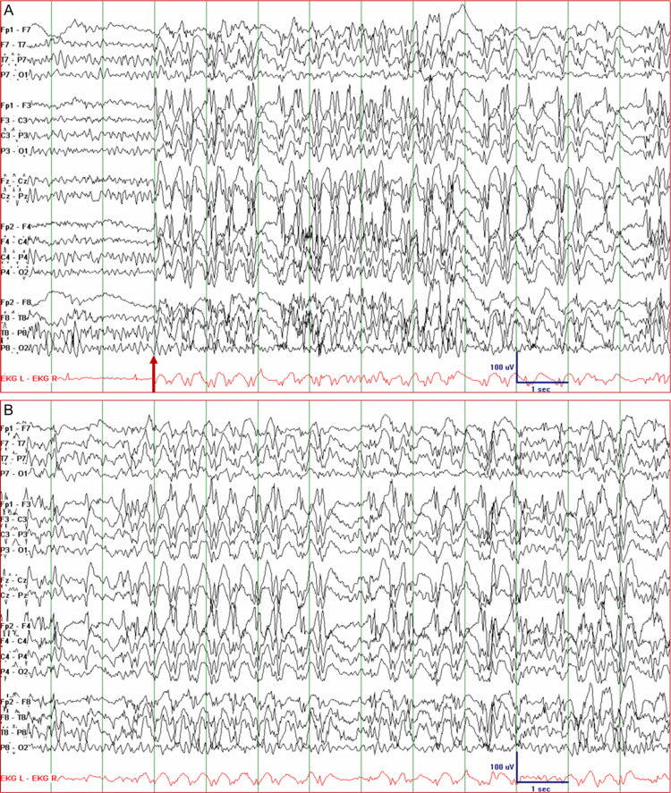

Caso clínico · Pág. 15 de 20
Ausência infantil: 3 Hz, hiperventilação e o João resolvido
O caso do João volta — agora com a peça que faltava. No futebol, ele corre, hiperventila e desliga. Esse gatilho, somado ao padrão de desligamentos de segundos e ao EEG, fecha o diagnóstico sindrômico que a escola não rotulou.
João, resolvido
Fechamento: ausência infantil / pequeno mal
Pico 5–8 anos e escola
A síndrome de ausência infantil / pequeno mal tem pico aos 5–8 anos. Múltiplas ausências/dia; a criança desliga, faz “cara de paisagem” por segundos e volta de onde parou. A queixa é dificuldade escolar; com a piora do aprendizado, sobe a bagunça/brincadeira.
Pegadinha
O DDx empurrado é TDAH e TEA por via escolar — não caia no rótulo sem o padrão de desligar. É o mesmo erro da página 1, agora com nome de síndrome.
Hiperventilação
O grande deflagrador é a hiperventilação (ex.: 2 min no consultório podem precipitar uma ausência). É indutor potente em epilépticos, sobretudo na ausência; o EEG de ambulatório inclui fase com e sem hiperventilação.
Caso: João no futebol — correr → hiperventila → desliga. Casa com ausência.
EEG 3 Hz
VFP [168]: o EEG característico é o complexo ponta-onda a 3 Hz (3 ciclos/s). É o número de prova canônico (a faixa técnica 2,5–4 Hz não invalida o claim).
Como contar 3 Hz no traçado (passo a passo, opt-in)
- Marque um trecho de 1 segundo no traçado.
- Conte os complexos ponta-onda nesse segundo: ~3 = 3 Hz.
- Confirme a generalização (descarga bilateral síncrona) e a regularidade do ritmo.
- Lembre: a faixa técnica é 2,5–4 Hz — o número de prova é o 3 Hz, mas o reconhecimento não exige casa decimal.
Tratamento e fechamento do João
Tratamento: etosuximida, valproato, lamotrigina — com destaque para a etosuximida, específica da ausência.
Fechamento do caso 1: João, 8 anos, desliga por segundos, muitas vezes/dia, piora no futebol → ausência infantil / pequeno mal.

Resumo operacional
5–8 a · escola · hiperventilação · 3 Hz · ETX/VPA/LTG · João = ausência infantil.
Por que importa
O caso-âncora da plataforma fecha aqui: o desligar que a Ritalina não explicou tem nome, gatilho, traçado e droga. Ler o padrão antes do rótulo salvou o João de um TDAH errado.
Quiz
Conexão
Nem toda epilepsia infantil exige droga o tempo todo — a rolândica ensina que às vezes o tratamento é só acompanhar.